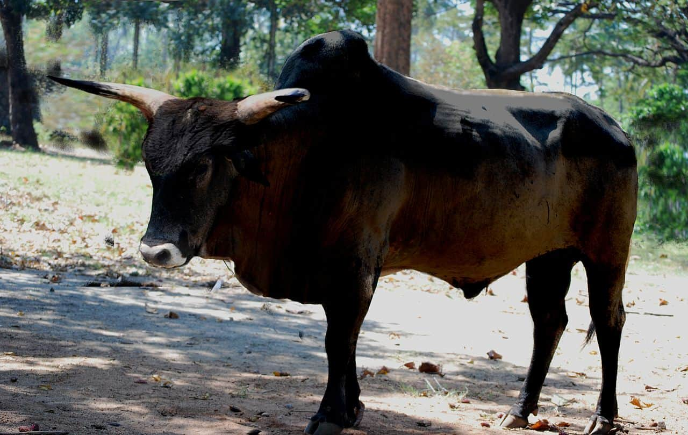
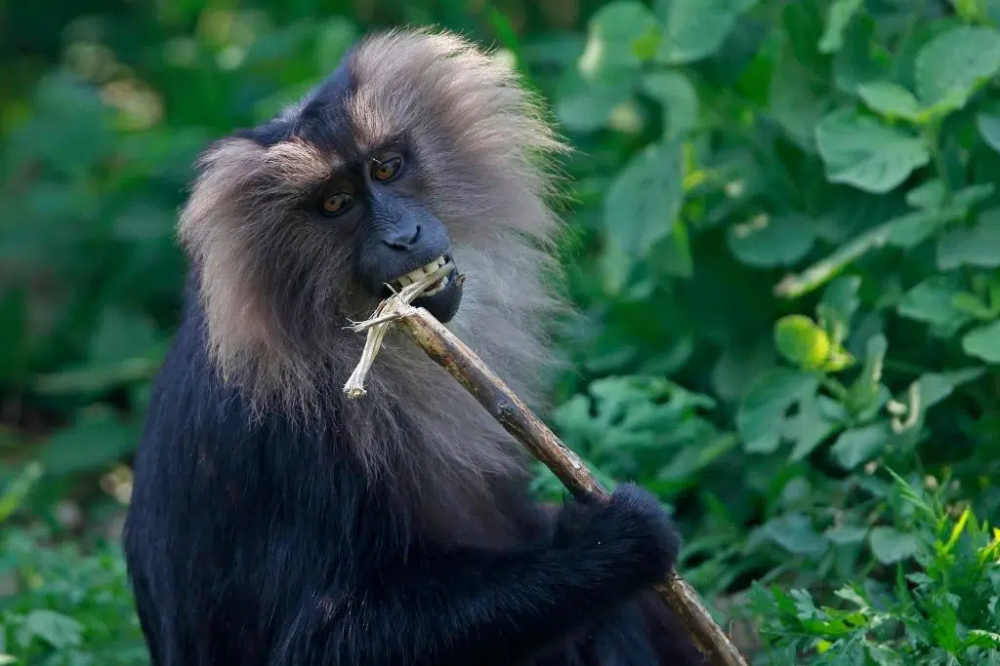

Snow leopard

Much like the Asiatic Lion, snow leopards used to have much larger habitats and prowled across the mountain ranges of Asia. Now, they can only be found in Ladakh, Himachal Pradesh, Uttarakhand and the western and eastern parts of the Himalayas, with population numbers down to about 500 in India. Unsurprisingly, this drop is the result of human interference, namely animal poaching for its pelt and body parts, and a rapid decline of prey due to increasing domestic livestock, which depletes the high altitude pasture lands.
Nilgiri Tahr
This endangered mountain goat species only has about 2,500-3,000 individuals remaining in the wild.wildlife poaching and habitat loss has led the nilgiri tahr to be contained within the states of Kerala and Tamil Nadu, covering less than 10% of their former range. But for these mountain goats, climate change is expected to be an even bigger threat. The animal lives in high-altitude mountainous grasslands and rocky cliffs of the Western Ghats, and is projected to become unsuitable habitats for the goats as global surface temperatures rise.
Blackbuck
Due to severe poaching – hunted especially in the princely states of India for their pelts – and habitat loss, the blackbuck, or Indian antelope, is now one of the most endangered species in India. In 1947, there were around 80,000 blackbucks. But that number had fallen to 8,000 in less than 20 years. Despite conservation efforts that help population numbers go back up to around 25,000, factors such as preying stray dogs – which India has one of the highest rates of – pesticides and moving vehicles all continuing threats to the species.